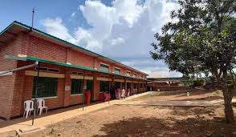
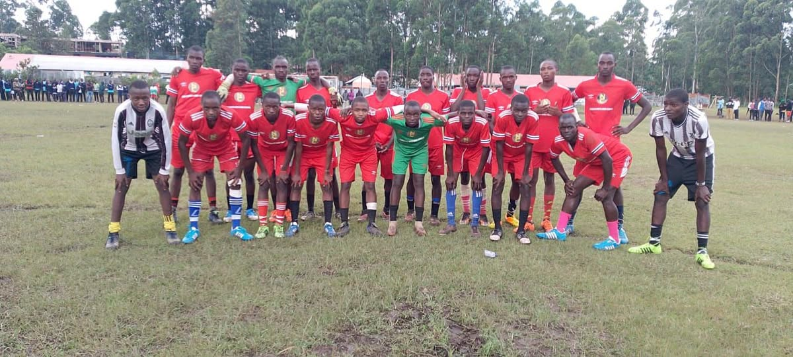
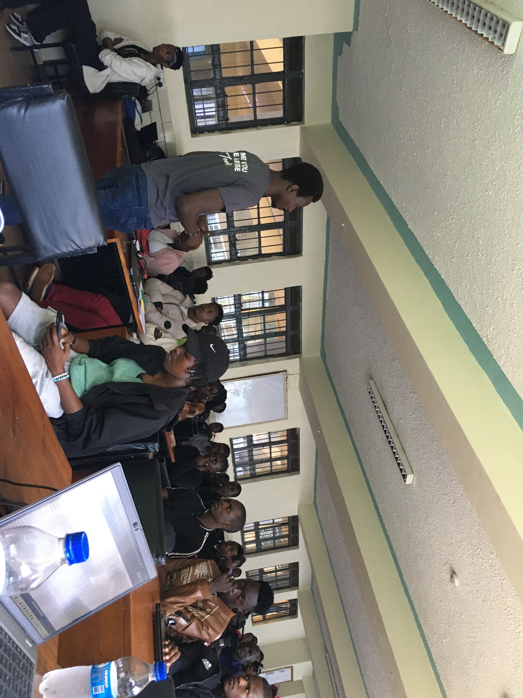

Introduction
My academic journey has been filled with curiosity, challenges, lessons, and growth. From my early days in pre‑school to becoming a fourth‑year university student, each stage shaped my discipline, character, and aspirations.
Pre‑School Years: The Beginning
My academic life began in pre‑school, where I was introduced to structured learning. Activities such as singing, drawing, and storytelling helped develop my curiosity and social skills.
Lesson learned: Learning becomes meaningful when curiosity is encouraged early.
Primary School: Building the Foundation
I joined Itumbe Highway Primary School, where discipline, consistency, and responsibility were emphasized. Teachers played a major role in shaping my academic attitude.
- Academic discipline
- Sports and group activities
- Early leadership skills
Lesson learned: Consistency and discipline are key to success.
High School: Character Development
At Nyamache Boys High School, I experienced academic pressure and personal responsibility. Peer influence and time management were major challenges.
Regrets:
- Not taking academics seriously at certain stages
- Poor time management
Lesson learned: Every decision has consequences.
University Life: Growth and Purpose
I am currently a fourth‑year student at Masinde Muliro University of Science and Technology (MMUST), pursuing Information Systems And Knowledge Management. University life introduced independence and hands‑on learning.
- Software development
- Web technologies
- Team collaboration
Influential Individuals
Teachers, lecturers, family members, and friends influenced my journey positively and negatively. Each interaction contributed valuable lessons.
Lessons Learned
- Discipline outweighs talent without focus
- Mistakes are stepping stones to growth
- Learning never stops
Future Aspirations
My goal is to become a skilled IT professional and software developer, build solutions that solve real‑world problems, and grow into a responsible leader in the technology industry.
Conclusion
This academic journey has shaped who I am today. Each stage contributed lessons that continue to guide my future ambitions.